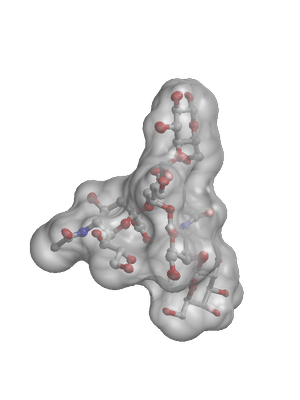

Grasp (home page) is a molecular visualization tool that to the best of my knowledge is available only for SGI workstations and some older versions of Windows. Grasp itself does not produce Raster3D output, but the molecular surfaces calculated by grasp can be saved to a file and then converted to a Raster3D input description. The filter program that does this conversion is called "ungrasp", and is part of the Raster3D source distribution. The ungrasp source code and notes on using it are in the ./grasp/ subdirectory of the Raster3D source tree.
MSMS (original home page) is another program that calculates molecular surfaces, and has a number of advantages over grasp. Although you may still be able to download MSMS itself, it has been replaced by a newer python-based tool PMV (home page). Two filter programs to convert MSMS output files into Raster3D input files are provided in the Raster3D source distribution. One is a perl script. The other is C source code. Both are in the ./examples/msms subdirectory of the source tree, and by default are installed permanently in /usr/local/share/Raster3D/examples/msms/.
| A figure composed with MSMS and Raster3D | The script that generated this figure |
|---|---|
|  | #!/bin/csh # # Calculate molecular surface of a pentasaccharide # ln -s ../sugarG.pdb protein.pdb cat protein.pdb | pdb_to_xyzr > surf.dat msms -if surf.dat -of surf -probe_radius 1.4 -density 5.0 # # Convert msms output to Raster3D description of the surface # ./msms2r3d.pl surf.face surf.vert > surf.r3d # # Make an auto-centered ball+stick view of the molecule # rastep -auto -rad 0.20 -prob 0.10 < protein.pdb > protein.r3d # # Combine the ball+stick figure with a transparent material # description from the Raster3D library # applied to the molecular surface generated in MSMS # Save the combined picture as a PNG file # render -size 300x400 -zoom 85% -png picture.png << EOF @protein.r3d @translucent_60 @surf.r3d EOF # rm -f protein.pdb msms_surf.dat.log rm -f surf.dat surf.face surf.vert rm -f surf.r3d protein.r3d |
 Back to top
Back to top